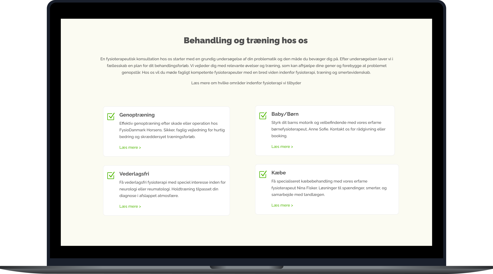
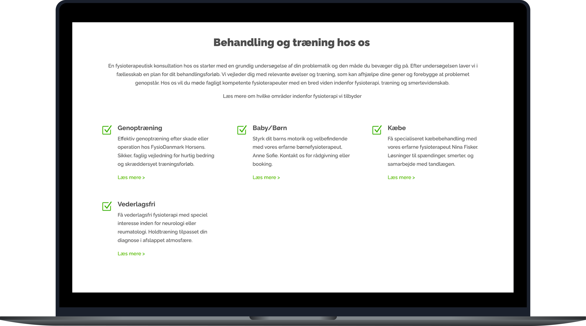

Fysio Danmark
Et projekt om at analysere og optimere en eksisterende hjemmeside for en fysioterapiklinik – med fokus på at gøre indhold nemmere at overskue og vejen til at booke en tid tydeligere.

Udfordringen
Fysio Danmark Horsens' hjemmeside indeholdt meget information, og det kunne derfor være svært hurtigt at danne sig et overblik over de forskellige behandlinger og medarbejdere.
Jeg ville gøre siden mere overskuelig og samtidig skabe et mere personligt udtryk, hvor man får en bedre fornemmelse af menneskene bag klinikken.
Processen
Jeg startede med at gennemgå den eksisterende hjemmeside for at finde de steder, hvor struktur og indhold kunne forbedres. Herefter arbejdede jeg med layout, typografi, farver og visuel hierarki i Figma. Jeg havde især fokus på at gøre informationen nemmere at finde og give medarbejderne en større rolle i kommunikationen. Som en del af projektet lavede jeg også Instagram-opslag, hvor de forskellige medarbejdere blev præsenteret.
- Gennemgang af eksisterende hjemmeside
- Strukturering af indhold og hierarki
- Omprioritering af indhold, så det vigtigste står tydeligst
- Tydeligere visuelt hierarki mellem overskrifter og brødtekst
- Instagram-opslag med præsentation af medarbejder
Resultatet
Resultatet blev en mere overskuelig og personlig løsning, hvor brugeren lettere kan finde information om behandlinger og samtidig få et indblik i, hvem der står bag klinikken. Jeg arbejdede også med Instagram opslag, hvor medarbejderne blev præsenteret på en enkel og genkendelig måde, så det visuelle udtryk hænger sammen på tværs af hjemmeside og sociale medier.
